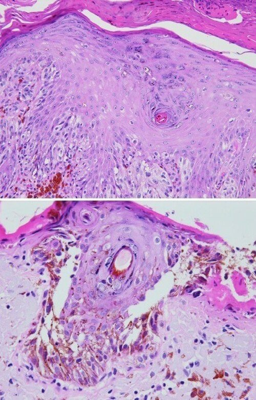

Información divulgativa. No sustituye la valoración de tu equipo médico ni sirve para decidir un tratamiento.


En resumen
| Frecuencia | 330.000 casos al año en el mundo; unos 8.000 en España, y en aumento |
| Quién | Cualquier edad adulta; uno de los más frecuentes entre 25 y 50 años |
| Causa principal | Radiación ultravioleta (sol y cabinas de bronceado), sobre todo quemaduras en la infancia |
| Señal | Un lunar nuevo o que cambia (regla ABCDE) |
| Tratamiento | Cirugía con ganglio centinela; inmunoterapia y terapias dirigidas (BRAF/MEK) |
| Supervivencia | Más del 90 % a cinco años; más del 98 % en melanomas finos |
Qué es
El melanoma nace de los melanocitos, las células que fabrican el pigmento de la piel. Puede aparecer sobre un lunar previo (un 25-30 %) o, más a menudo, como una mancha nueva. Aunque es mucho menos frecuente que los carcinomas basocelular y epidermoide, causa la mayoría de las muertes por cáncer de piel porque puede dar metástasis.
Tipos
| Tipo | Rasgos |
|---|---|
| De extensión superficial | El más común (60-70 %); crece en horizontal antes de profundizar |
| Nodular | Crece en profundidad deprisa; a menudo sin seguir la regla ABCDE (regla EFG: elevado, firme, en crecimiento) |
| Léntigo maligno | En la cara de personas mayores con mucho sol acumulado |
| Lentiginoso acral | En palmas, plantas y uñas; el más frecuente en personas de piel oscura y asiáticas; no relacionado con el sol |
| Mucoso | En boca, nariz, genitales, ano |
| Uveal | En el ojo; tiene ficha propia |
Factores de riesgo
- Quemaduras solares, sobre todo en la infancia y adolescencia, y exposición intermitente intensa.
- Cabinas de rayos UVA: aumentan el riesgo un 75 % si se usan antes de los 35 años (la IARC las clasifica como cancerígenas del grupo 1).
- Piel clara, pelo rubio o pelirrojo, ojos claros, pecas, facilidad para quemarse.
- Muchos lunares (más de 50) o lunares atípicos.
- Antecedentes familiares (mutaciones de CDKN2A, CDK4, BAP1, MITF).
- Melanoma previo, inmunodepresión.
Prevención
- Evitar el sol entre las 12 y las 16 horas, buscar sombra.
- Ropa, sombrero de ala ancha y gafas de sol.
- Protector solar de amplio espectro con FPS 30 o más, renovado cada 2 horas y tras el baño. El ensayo de Nambour (Australia) mostró que su uso diario reduce a la mitad los melanomas invasivos.
- No usar cabinas de bronceado.
- Proteger especialmente a los niños.
- Autoexploración mensual de toda la piel, con ayuda de un espejo o de otra persona, y revisiones dermatológicas en personas de alto riesgo (a veces con dermatoscopia digital y mapeo corporal).
Síntomas: la regla ABCDE
| Letra | Qué mirar |
|---|---|
| Asimetría | Una mitad no es igual a la otra |
| Bordes | Irregulares, dentados o mal definidos |
| Color | Varios colores (marrón, negro, rojo, blanco, azul) |
| Diámetro | Mayor de 6 mm (aunque puede ser menor) |
| Evolución | Cambia de tamaño, forma o color, pica o sangra |
También el signo del "patito feo": un lunar distinto a todos los demás de la persona. Y en uñas, una banda oscura nueva o que se ensancha.
Diagnóstico
- Dermatoscopia: lupa con luz que muestra estructuras invisibles a simple vista.
- Extirpación completa (biopsia escisional) de la lesión sospechosa.
- El informe mide el grosor de Breslow (en milímetros), la ulceración y las mitosis: los factores pronósticos clave.
- Biopsia del ganglio centinela en melanomas de más de 0,8 mm o ulcerados.
- En estadios altos: TC o PET-TC, resonancia cerebral y estudio de la mutación BRAF (presente en el 40-50 %).
Estadios
| Estadio | Descripción | Supervivencia a 5 años aprox. |
|---|---|---|
| 0 | In situ, solo en la epidermis | ~100 % |
| I | Fino (≤ 1-2 mm), sin ganglios | 95-99 % |
| II | Más grueso o ulcerado, sin ganglios | 80-95 % |
| III | Ganglios o metástasis en tránsito | 40-90 % según el subestadio |
| IV | Metástasis a distancia | Más del 50 % con inmunoterapia combinada en algunos grupos |
Tratamiento
- Ampliación de márgenes quirúrgicos (0,5-2 cm según el grosor).
- Ganglio centinela; si es positivo, ya no suele hacerse la linfadenectomía completa (ensayos MSLT-II y DeCOG-SLT), sino vigilancia con ecografía y tratamiento sistémico.
- Tratamiento adyuvante (tras la cirugía) en estadios IIB-IV: inmunoterapia (nivolumab o pembrolizumab) durante un año, o dabrafenib con trametinib si hay mutación BRAF.
- Tratamiento neoadyuvante: en melanoma con ganglios palpables, unas dosis de pembrolizumab antes de la cirugía mejoran los resultados (ensayos SWOG S1801 y NADINA, este último con nivolumab e ipilimumab).
- Enfermedad avanzada:
- Nivolumab con ipilimumab: la mitad de los pacientes siguen vivos a 10 años (ensayo CheckMate 067), algo inimaginable antes de 2011.
- Nivolumab con relatlimab (anti-LAG-3), o anti-PD-1 solo.
- BRAF V600: inhibidores de BRAF y MEK (dabrafenib + trametinib, encorafenib + binimetinib, vemurafenib + cobimetinib).
- Terapia con linfocitos infiltrantes de tumor (TIL), lifileucel, aprobada en Estados Unidos en 2024.
- Radiocirugía de metástasis cerebrales, que también responden a la inmunoterapia.
Pronóstico
La inmunoterapia ha transformado el melanoma metastásico: antes de 2011 la supervivencia media era de 6-9 meses; hoy, con la combinación de nivolumab e ipilimumab, la mediana supera los 6 años.
Después del tratamiento
Revisiones de la piel y de los ganglios durante al menos 5-10 años, autoexploración, protección solar estricta y control de los efectos de la inmunoterapia (tiroides, suprarrenales, hipófisis, colitis, hepatitis). Los familiares de primer grado deben revisarse la piel.
Novedades
- Vacunas de ARNm personalizadas (mRNA-4157/V940) con pembrolizumab tras la cirugía: menos recaídas en el estudio KEYNOTE-942; en fase 3.
- Inteligencia artificial para analizar imágenes dermatoscópicas.
- Anticuerpos biespecíficos y nuevas terapias celulares.
Preguntas para tu equipo
- ¿Qué grosor de Breslow tiene mi melanoma? ¿Está ulcerado?
- ¿Necesito biopsia del ganglio centinela?
- ¿Tiene mutación BRAF?
- ¿Me beneficiaría un tratamiento tras la cirugía?
- ¿Cada cuánto debo revisarme la piel?
Más información
- Academia Española de Dermatología y Venereología (AEDV): Euromelanoma
- Grupo Español Multidisciplinar de Melanoma (GEM)
- Melanoma Patient Network Europe
Ver también: Carcinoma basocelular, Carcinoma epidermoide cutáneo, Melanoma uveal, Inmunoterapia, Síntomas que no hay que ignorar.
Historia · Medicapedia
Melanoma en la historia de la medicina
Cómo se descubrió, quién lo investigó y cómo cambió su tratamiento a lo largo de los siglos, contado en Medicapedia, nuestra web hermana de historia de la medicina.
Leer la historia en Medicapedia ↗Fuentes
- Michielin O, et al. Cutaneous melanoma: ESMO Clinical Practice Guidelines. Ann Oncol. 2019;30:1884-1901. doi:10.1093/annonc/mdz411
- Garbe C, et al. European consensus-based interdisciplinary guideline for melanoma. Part 2: Treatment – Update 2024. Eur J Cancer. 2025;215:115153.
- Wolchok JD, et al. Final, 10-year outcomes with nivolumab plus ipilimumab in advanced melanoma (CheckMate 067). N Engl J Med. 2025;392:11-22.
- Blank CU, et al. Neoadjuvant nivolumab and ipilimumab in resectable stage III melanoma (NADINA). N Engl J Med. 2024;391:1696-1708.
- Green AC, et al. Reduced melanoma after regular sunscreen use: randomized trial follow-up. J Clin Oncol. 2011;29:257-263. doi:10.1200/JCO.2010.28.7078
- Faries MB, et al. Completion dissection or observation for sentinel-node metastasis in melanoma (MSLT-II). N Engl J Med. 2017;376:2211-2222. doi:10.1056/NEJMoa1613210
- IARC. Solar and ultraviolet radiation. Monographs Volume 100D.